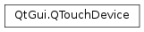

QTouchDevice¶
Synopsis¶
Functions¶
- def
capabilities() - def
maximumTouchPoints() - def
name() - def
setCapabilities(caps) - def
setMaximumTouchPoints(max) - def
setName(name) - def
setType(devType) - def
type()
Detailed Description¶
The
PySide2.QtGui.QTouchDeviceclass describes the device from which touch events originate.Each
PySide2.QtGui.QTouchEventcontains aPySide2.QtGui.QTouchDevicepointer to allow accessing device-specific properties like type and capabilities. It is the responsibility of the platform or generic plug-ins to register the available touch devices via QWindowSystemInterface before generating any touch events. Applications do not need to instantiate this class, they should just access the global instances pointed to byQTouchEvent.device().
-
class
PySide2.QtGui.QTouchDevice¶ Creates a new touch device instance. By default the name is empty, the only capability is Position and type is
TouchScreen.
-
PySide2.QtGui.QTouchDevice.DeviceType¶ This enum represents the type of device that generated a
PySide2.QtGui.QTouchEvent.Constant Description QTouchDevice.TouchScreen In this type of device, the touch surface and display are integrated. This means the surface and display typically have the same size, such that there is a direct relationship between the touch points’ physical positions and the coordinate reported by QTouchEvent.TouchPoint. As a result, Qt allows the user to interact directly with multiple QWidgets and QGraphicsItems at the same time.QTouchDevice.TouchPad In this type of device, the touch surface is separate from the display. There is not a direct relationship between the physical touch location and the on-screen coordinates. Instead, they are calculated relative to the current mouse position, and the user must use the touch-pad to move this reference point. Unlike touch-screens, Qt allows users to only interact with a single PySide2.QtWidgets.QWidgetorPySide2.QtWidgets.QGraphicsItemat a time.
-
PySide2.QtGui.QTouchDevice.CapabilityFlag¶ This enum is used with
QTouchDevice.capabilities()to indicate what kind of information the touch device or its driver can provide.Constant Description QTouchDevice.Position Indicates that position information is available, meaning that the pos() family of functions in the touch points return valid points. QTouchDevice.Area Indicates that touch area information is available, meaning that the rect() family of functions in the touch points return valid rectangles. QTouchDevice.Pressure Indicates that pressure information is available, meaning that pressure() returns a valid value. QTouchDevice.Velocity Indicates that velocity information is available, meaning that velocity() returns a valid vector. QTouchDevice.RawPositions Indicates that the list returned by QTouchEvent.TouchPoint.rawScreenPositions()may contain one or more positions for each touch point. This is relevant when the touch input gets filtered or corrected on driver level.QTouchDevice.NormalizedPosition Indicates that the normalized position is available, meaning that normalizedPos() returns a valid value. QTouchDevice.MouseEmulation Indicates that the device synthesizes mouse events. This enum value has been introduced in Qt 5.5.
-
PySide2.QtGui.QTouchDevice.capabilities()¶ Return type: PySide2.QtGui.QTouchDevice.CapabilitiesReturns the touch device capabilities.
-
static
PySide2.QtGui.QTouchDevice.devices()¶ Return type: Returns a list of all registered devices.
Note
The returned list cannot be used to add new devices. To add a simulated touch screen for an autotest,
QTest.createTouchDevice()can be used. To add real touch screens to QPA plugins, the privateQWindowSystemInterface::registerTouchDevice()function can be used.
-
PySide2.QtGui.QTouchDevice.maximumTouchPoints()¶ Return type: PySide2.QtCore.intReturns the maximum number of simultaneous touch points (fingers) that can be detected.
-
PySide2.QtGui.QTouchDevice.name()¶ Return type: unicode Returns the touch device name.
This string may often be empty. It is however useful for systems that have more than one touch input device because there it can be used to differentiate between the devices (i.e. to tell from which device a
PySide2.QtGui.QTouchEventoriginates from).See also
-
PySide2.QtGui.QTouchDevice.setCapabilities(caps)¶ Parameters: caps – PySide2.QtGui.QTouchDevice.CapabilitiesSets the capabilities
capssupported by the device and its driver.
-
PySide2.QtGui.QTouchDevice.setMaximumTouchPoints(max)¶ Parameters: max – PySide2.QtCore.intSets the maximum number of simultaneous touchpoints
maxsupported by the device and its driver.
-
PySide2.QtGui.QTouchDevice.setName(name)¶ Parameters: name – unicode Sets the
name(a unique identifier) for the device. In most systems it is enough to leave this unset and keep the default empty name. This identifier becomes important when having multiple touch devices and a need to differentiate between them.See also
-
PySide2.QtGui.QTouchDevice.setType(devType)¶ Parameters: devType – PySide2.QtGui.QTouchDevice.DeviceTypeSets the device type
devType.See also
-
PySide2.QtGui.QTouchDevice.type()¶ Return type: PySide2.QtGui.QTouchDevice.DeviceTypeReturns the touch device type.
See also
© 2018 The Qt Company Ltd. Documentation contributions included herein are the copyrights of their respective owners. The documentation provided herein is licensed under the terms of the GNU Free Documentation License version 1.3 as published by the Free Software Foundation. Qt and respective logos are trademarks of The Qt Company Ltd. in Finland and/or other countries worldwide. All other trademarks are property of their respective owners.